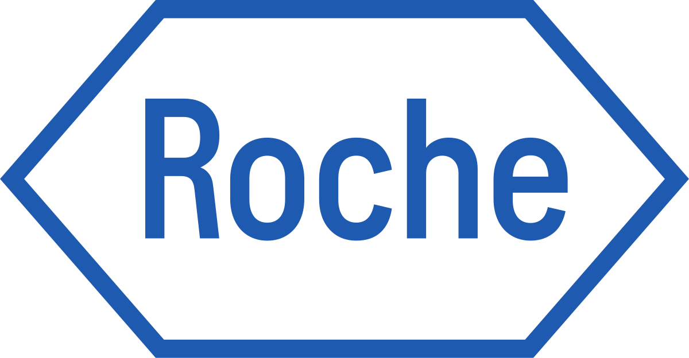
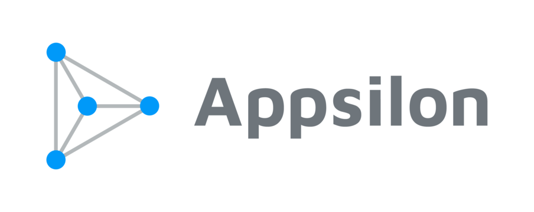
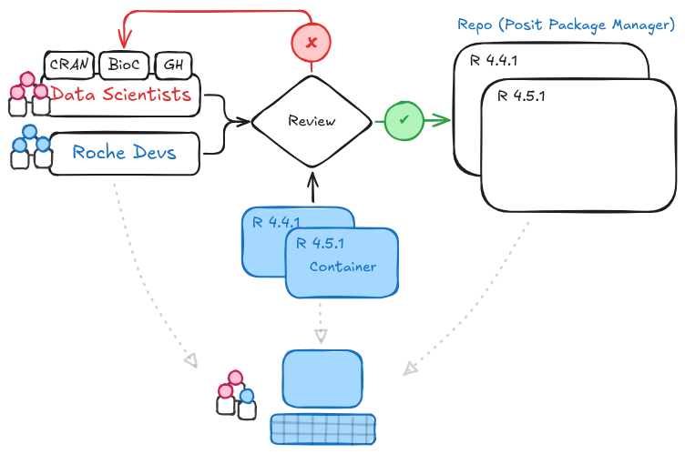
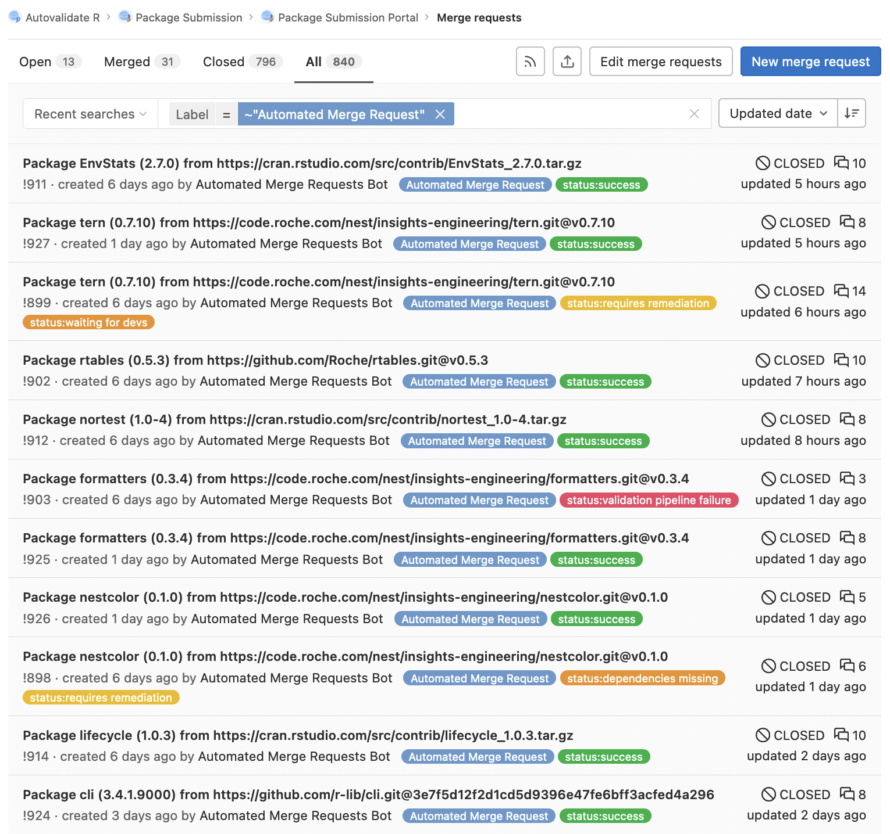
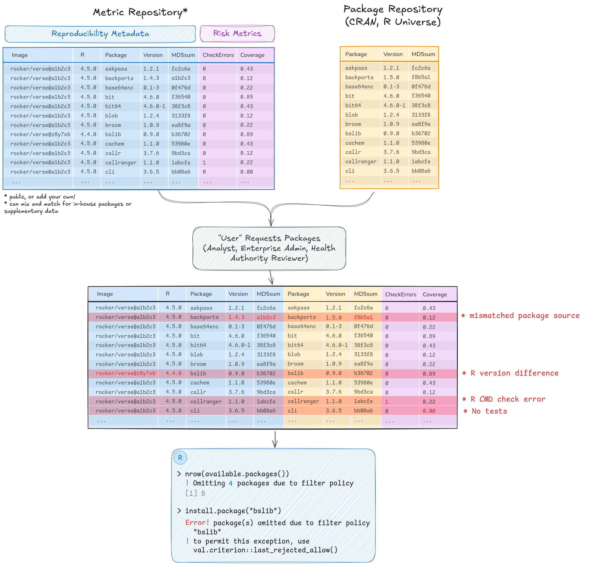

timeline
title Frozen R environments with ~6 month refresh
H123 : R4.1.0 bundle 1
H223 : R4.1.0 bundle 2
H124 : R4.3.1 bundle 1
H224 : R4.3.1 bundle 2
: Project-level bundle using an adhoc, GxP install
Deploying reproducible analytics environments for regulated use cases
posit::conf(2025) tutorial
James Black & Orla Doyle , Doug Kelkhoff , Michael Mayer , Rafael Pereira 
2025-09-16
Welcome!

Your facilitators

Doug Kelkhoff

Michael Mayer
Rafael Pereira

Orla Doyle
James Black
Today
- Till 10.30am: A reflection on conversations to date
- 10.30am: ☕ Coffee break
- 11am: Hands-on
- 12.30pm: 🍲 Lunch
- 1.30pm: Hands-on part 2
- 2pm: Small group session
- 3pm: ☕ Coffee break
- 3.30pm: Small group session part 2
- 4.30pm: Wrap up
Our aim
- Explore challenges in provisioning R environments for regulated industries
- Evaluate different approaches
- Foster dialogue
- Share experiences
Why This Matters
Reproducibility as the foundation for trust in Pharma
Reproducibility = Trust
- Required by FDA, EMA, PMDA, GxP
- Repeatable results ⇒ credibility & compliance
- Without it ⇒ risk, rework, delays
Pharma’s Legacy Struggles
- Monoliths, manual validation
- “Validation tax”: bloated, slow pipelines
- Two environments: exploratory vs validated
Containers Change Everything
- Frozen, versioned execution environments
- Consistency across dev → validation → submission
- Isolate deps (R, Python, SAS); runs the same everywhere
They enable all of this, but can feel like a mystery — so we’ll show them in action today
Beyond Containers
Containers are the backbone, but not the whole story, there’s a whole ecosystem around them:
- Managed package repos ⇒ governance & trust
- Snapshot versions ⇒ no surprises in re-runs
- Audited jobs ⇒ capture runtime metadata
- Infrastructure as Code ⇒ environments are reproducible end-to-end
Rafa’s & Appsilon’s Perspective
Reproducibility is not only a regulatory requirement it’s the foundation that lets science move fast and responsibly.
- Reproducibility = compliance × innovation
- Containers = scalability + sustainability
- One backbone: validated & exploratory zones
- Modular, cloud-native Scientific Environments
You’ve got to roll with it!
A summary of experiences at Novartis.
Orla Doyle (presented by James)
Adopting new tools
- At Novartis we were testing the {rbmi} package for multiple imputation
- We weren’t able to reproduce our results
- The underlying algorithm is deterministic so this was unexpected
- The magnitude of the difference was enough to change the scientific conclusions
Reproducibility Detective Work
Did we set the seed? Yes!
Is this related to hardware? No!
Is this a problem with a specific OS linear algebra library? No!
Open-source in action
Unlike closed-source solutions, we can examine the source code and collaborate in a transparent manner between developers and maintainers.
- {rbmi} issue: https://github.com/insightsengineering/rbmi/issues/420
- {mmrm} issue: https://github.com/openpharma/mmrm/issues/462
- {TMB} issue: https://github.com/kaskr/adcomp/issues/398

Collaborated with package maintainers to implement the fix

- ~3 weeks from issue identification to solution
- Fix deployed at source
- Highly collaborative and engaged package maintainers - THANK YOU!!


Deployment at Novartis
- Current package management is a hybrid approach: frozen-model with the option to perform a rolling update at the study-level
- The rolling update is essential so we can use the latest, corrected version of packages
- Implementation of rolling update could be improved using managed tools like ppm
Conclusions
- The packages we rely on are in a constant state of flux: this is a feature not a bug!
- Our approach to package management needs to be fit-for-purpose and enabling timley access to the latest versions
Industry perspectives
Sustainable Software at Roche
Balancing rigor with effective data science
Software quality is a risk, but so are outdated software and reluctant data scientists.

Automating the busy work
Being rigorous is a lot of work, but most of it can be automated

success
- Report produced as CI artifact
- Package published to internal Posit Package Manager
requires remediation
- Package requires manual review
- Support team R experts review package, either
✅ justifying gaps
❌ or rejecting
The R Validation Hub
Who we are
- Started here! R/Pharma 2018
- Operating under the R Consortium
- Delivered a white paper that outlines what R validation could look like.
- Launched
{riskmetric},{riskassessment}shiny app
The R Validation Hub
Next!
- RVH tools re-imagined:
{val.meter},{val.report},{val.repo} - Building a public metric repository
The R Validation Hub
Building consensus

The R Validation Hub
Building consensus
options(
repos = repo,
val.criterion.repos = repo,
available_packages_filters =
package_filter(check_errors == 0 & percentile(downloads) >= 0.25)
)
available.packages()
#> ℹ excluding 3 packages according to package filtering policy
install.package(poor_quality_pkg)
#> Error in `install.packages()`:
#> ! required packages are excluded due to package filters
#> "poor_quality_pkg"
#> ℹ To explain, use `val.criterion::last_rejected()`Why Novartis wants to thaw the status quo (James & Orla)
?
Hands on section
Aims for this session
- Explore considerations when designing an R computing environment
- Understand trade-offs with each design choice, often trading flexibility, reproducibility and complexity.
- See and test a few examples of setups along the way.
Logging in
Small group session
A chance to design with your peers.
There is no industry standard for deliverying environments
- We want to hear your proposals!
Goal
Deliverable 1:
- Who are the key stakeholders to a regulated R environment?
- Are you aiming to solve specific pain points?
Deliverable 2:
- Whiteboard a proposed architecture to test and provision ‘post risk review’ packages
- Highlight key experiences. E.g. updating packages, new packages, internal vs CRAN, etc, adding or updating unix level dependencies, etc
Part 1: In the next hour
We will divide into 4 groups;
- Whiteboard a high level architecture
- You decide whether you map out the entire architecture, or tackle specific ke problems!
- Be prepared after the coffee break to present for 10 minutes!
Part 2: Presentations
- Each group has 10 minutes to present with 5 minutes for questions
- Focus on what you think is most useful to share
- That could be going deep into an end to end architecture OR you could share a high level architecture, and focus in on key pain points you’ve discussed and plans to mitigate them
- Please make sure to flag any impact or deeper dives you felt were needed, with stakeholders spanning from IT Quality to end-users.
Tutorial: Deploying reproducible analytics environments for regulated use cases